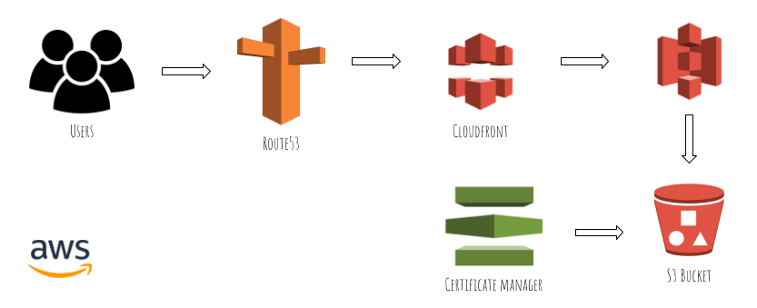

FEATURED PROJECTS!
CI/CD Pipeline Project
This CI/CD Pipeline project uses GitLab, Docker, Nginx, AWS, and ECR. A simple current time webpage is deployed using Docker. The Docker image is automatically uploaded to an AWS ECR repository. Future changes trigger a new image build and ECR upload.

AWS Website
This website was deployed using several AWS services including: S3, IAM, Route 53, CloudFront, DynamoDB, Lambda, API Gateway
Subnetting Expertise
I created an easier way to manually subnet IPv4 address fast. My YouTube channel has over 30,000 views and pver 300 subscribers and counting.